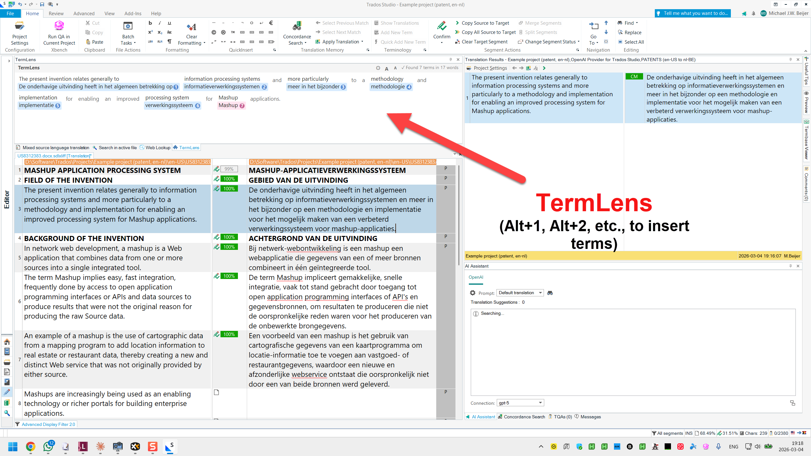
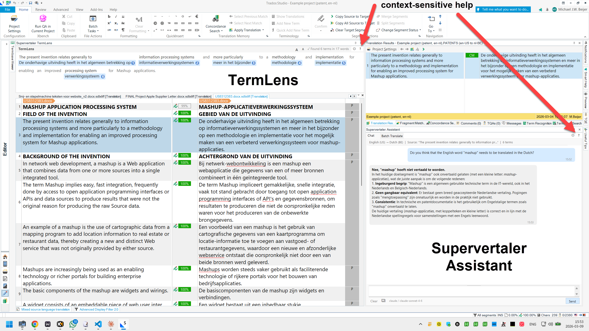

Inline terminology display, AI-powered translation, and batch processing — built directly into Trados Studio 2024.
Professional terminology and AI tools inside Trados Studio
Inline terminology display that shows source text word by word with glossary translations directly underneath each matched term.
Project-aware conversational AI assistant in a separate dockable panel.
AI-powered translation of multiple segments at once with full prompt control.
Reads MultiTerm .sdltb termbases attached to your Trados project and displays their terms as green chips.
See Supervertaler for Trados in action

Inline terminology display with color-coded term chips, Alt+1–9 insertion, and full glossary context.

Press F1 or use the ? menu for instant access to documentation for any feature.
Source-available plugin with free and premium tiers
Get up and running in under a minute
Double-click the .sdlplugin file. Trados will install it automatically.
Restart Trados Studio. The Supervertaler panel appears in the Editor view.